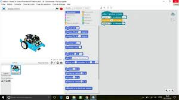

...
Systémes d'Information et Numérique:
La spécialité eplore l'acquisation, le traitement,
le transport, la gestion et la restitution de l'information (voix, données, image).
Elle apporte les compétences nécessaire pour appréhender l'interface utilisateur, la commande rapprochée des systémes,
les télécommunications, les réseaux informatiques,, les modules d'acquisition et de diffusion de l'information et plus généralement sur le développement de système virtuels
ainsi que sur leur impact environnemental et l'optimisation de leur cycle de vie.

